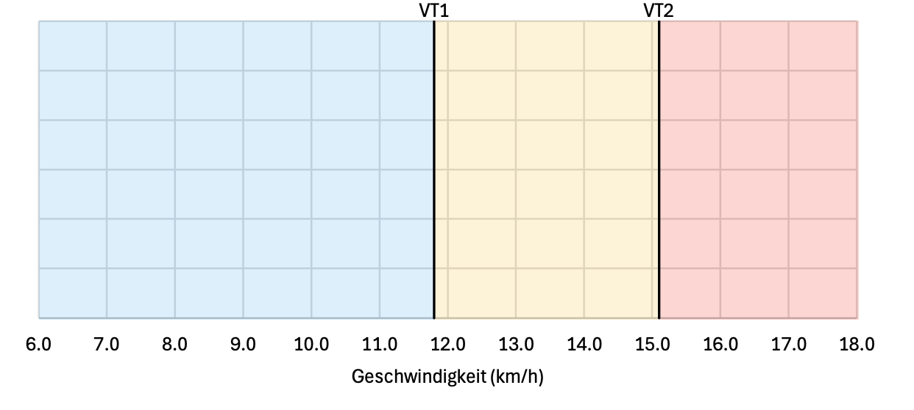

The distinction between training intensities and zones serves to highlight the different characteristics of training. While the physiological zones shown are important for precise work and the assessment of energy balance, the intensities can be used to train specific markers of respiratory frequency or the separately shown potentials with precision.
Training Intensities on Muscular Level & Visualization:
|
Speed |
HR
bpm |
|
|
km/h |
min/km |
In1: LIT
Low-Intensity Training, Sub-Stress-Zone |
From: |
|
6.0 |
10:00 |
105 |
| To: |
|
11.8 |
05:05 |
163 |
In2: SIT
Stress-Inducing Training |
From: |
|
11.8 |
05:04 |
163 |
| To: |
|
15.1 |
03:58 |
195 |
In3: HIT
High-Intensity Training |
From: |
|
15.1 |
03:57 |
195 |
| To: |
|
21.8 |
02:44 |
195 |

Cardiovascular Functions
Max. Stroke Volume
mL/bpm
150.94 mL/bpm
94 bpm
4.9 km/h
12:19 min/km
Max. Oxygen-Pulse
VO2/mL/bpm
18.47 VO2/mL/bpm
178 bpm
13.4 km/h
04:28 min/km
Max. Heart-Minute Volume
L/min
21.6 L/min
195 bpm
15.2 km/h
03:57 min/km
COR-Zone for Cardiovascular Development
Heart rate HF (bpm):
94
178
Stroke volume SV (mL/bpm)
150.94
120.48
Oxygen-Pulse PO2 (VO2/mL/min/bpm)
14.2
18.5
Heart-Minute Volume HMV (L/min)
13.0
20.9
Corresponding Speed (km/h)
4.9
13.4
The range between the maximum stroke volume SV SVMax and the maximum oxygen-pulse PO2Max can be used to train the heart in its performance capability as a muscle in a targeted way (COR-Zone, see visualization on the following page).
While the maximum stroke volume simultaneously marks the maximum amount of blood that the heart can reach without a significant increase in heart rate (HF), the maximum of absorbable/deliverable oxygen is defined by a combination of increased heart rate and exhaustion of the available volume.